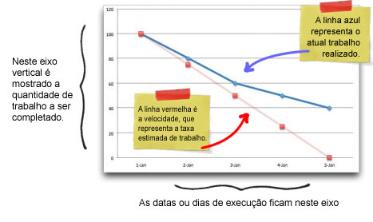

Burndown é uma ferramenta utilizada no Scrum para medir o desempenho de uma equipe durante o processo de desenvolvimento baseado na quantidade de horas de trabalho. Trata-se de uma lista de tarefas necessárias para a conclusão de uma sprint junto de um gráfico da linha do tempo da realização dessas tarefas. No gráfico exitem duas linhas: o desempenho “ideal” vs. o desempenjo real.
Ao final da Sprint, o Scrum Master junto da equipe observa as tarefas e períodos que causaram atraso e pensa em soluções para evitar esses contratempos.
A estimativa serve para guiar a eficiência do processo, ou seja, quanto mais próxima as linhas estão, melhor foi estimada a Sprint.
Burndown é um gráfico que representa a relação entre o trabalho a ser feito e o tempo necessário para executá-lo. É uma ferramenta visual do Scrum que permite aos gerentes de projeto verificar se o trabalho está dentro do esperado no que se refere ao cronograma.